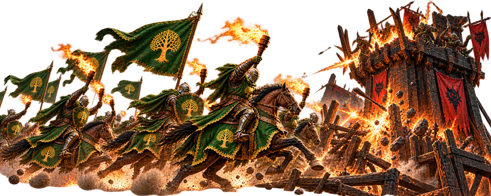

Infernal Assault
Infernal Assault is one of the most useful events for earning Gold. Work as a team, attack Infernal facilities and make sure everyone participates before the strongest players finish the job.
Why Infernal Assault Matters
Gold is needed throughout your development, including Immortal, Dragon and Artifact progression. Infernal Assault gives the alliance an opportunity to farm large amounts of it together.
Higher-level Infernal Camps are harder, but they also offer greater Gold rewards. A strong player can help carry a team into levels that weaker members might struggle to handle alone.
How the Camp Works
An Infernal Camp contains subsidiary facilities surrounding a Core Furnace. The outer facilities must be destroyed as the team works its way through the camp before the Core Furnace is finished.
Teamwork matters. Additional members strengthen the team, but simply joining is not the same as participating in the attacks.
Do not just join the team and watch. Attack a facility at least once. You do not need to be the player who destroys it, and even a very weak attack can establish your participation. Once everyone has had a chance to hit, let the stronger players do the heavy lifting.
Gold First or Speed First?
Gold First
If the goal is to maximize Gold for the team, make sure the players participate before facilities are destroyed. Stronger players can then finish the targets. This takes more coordination and can use more AP, but allows the group to get more value from the camp.
Speed First
If the goal is simply to clear camps quickly, stronger players can destroy facilities immediately. This is faster and more AP-efficient, but players who never participate in the attacks may miss Gold rewards.
Helping Weaker Players
Do not assume that a lower-power player has no place in a high-level team. Bring medium and developing players with you when the team can handle the camp.
They can tag facilities while the stronger marches handle most of the damage. This lets more members benefit from higher-level camps and helps the alliance grow together.
The Core Furnace
The Core Furnace is different from simply tagging the surrounding facilities. Its rewards are tied more closely to participation and damage, so do not assume every part of the camp distributes Gold in exactly the same way.
If you notice unusual reward differences between players, compare the battle and reward reports before assuming it is a glitch. The important strategy is still the same: coordinate, participate and avoid destroying targets before your team has done what it came to do.
When farming Gold as a team, give everyone the chance to participate before the heavy hitters finish the target.